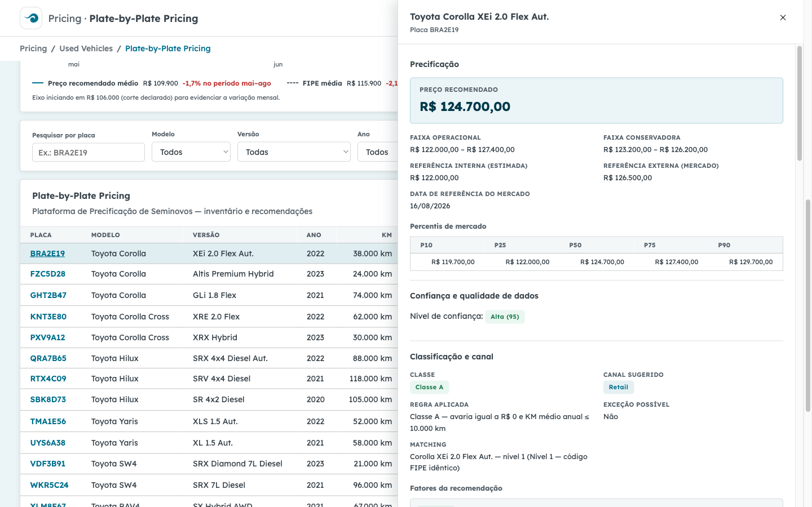
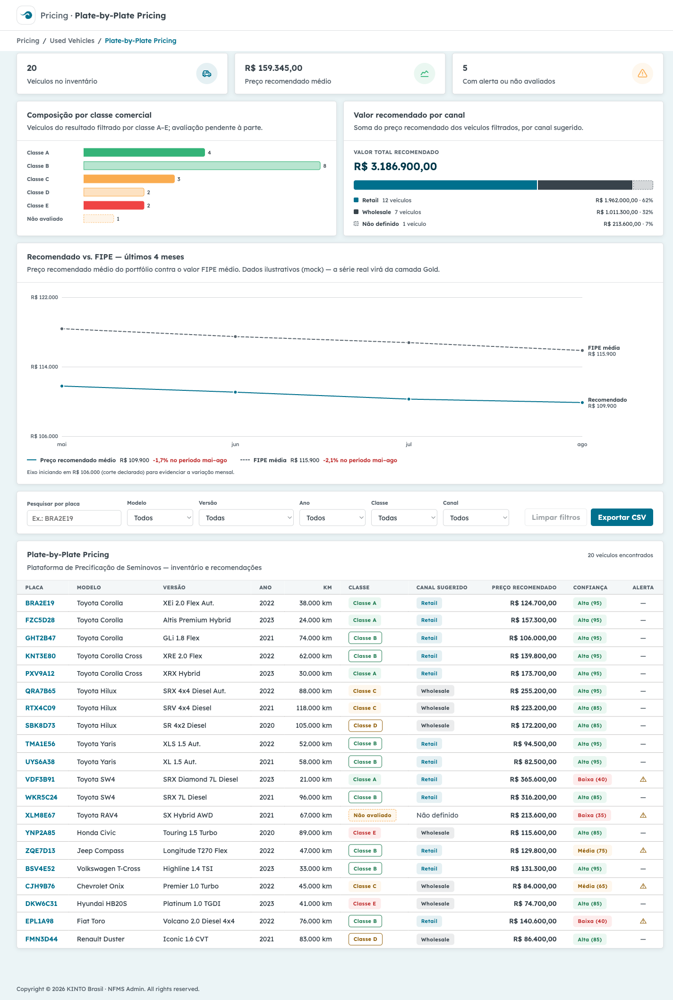
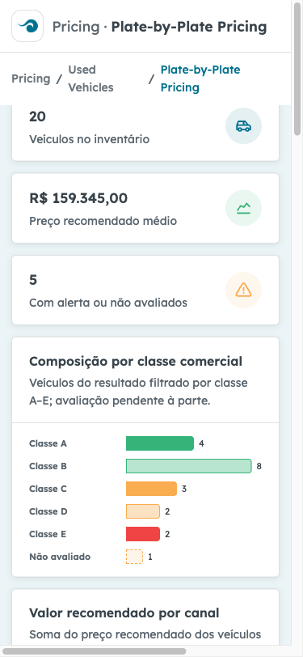

e2e/relatorio/relatorio.html / zero-vulnerabilidades.pdf); este relatório a referencia sem re-executá-la.| Suíte | Comando | Testes | Passou | Falhou | Bloqueado |
|---|---|---|---|---|---|
| Backend — unitários e integração (pytest) | cd backend && python -m pytest -v | 23 | 23 | 0 | 0 |
| Frontend — agregações (vitest) | cd frontend && npx vitest run | 13 | 13 | 0 | 0 |
| Frontend — qualidade estática (lint + build) | npm run lint · npm run build | 2 | 2 | 0 | 0 |
| E2E — jornadas no navegador (Playwright) | cd e2e && npx playwright test --project=jornadas | 7 | 6 | 1 | 0 |
| Total geral | 45 | 44 | 1 | 0 | |
Python 3.9.6 · pytest 8.3.5 · execução em 0,16 s · backend/tests/.
| Teste | Valida | Status |
|---|---|---|
test_api.py::test_inventario_lista_todos | RF-F6-A-01 — inventário completo | PASSOU |
test_api.py::test_pesquisa_por_placa_parcial | RF-F6-A-02 — busca parcial por placa | PASSOU |
test_api.py::test_filtro_por_classe_e_canal | RF-F6-A-03 — filtros combinados | PASSOU |
test_api.py::test_filtro_nao_avaliado_traz_veiculo_com_avaria_nula | "Avaria nula ≠ zero" no filtro | PASSOU |
test_api.py::test_todas_as_classes_estao_representadas | Cobertura A–E + não avaliado no mock | PASSOU |
test_api.py::test_filtro_classe_invalida_retorna_400_padrao_api_land | Validação de entrada, envelope de erro | PASSOU |
test_api.py::test_detalhe_completo_e_coerente | RF-F6-A-04..08 — detalhe coerente | PASSOU |
test_api.py::test_detalhe_avaria_nula_tem_motivo_e_alerta | RF-F6-A-09 — motivo/alerta no não avaliado | PASSOU |
test_api.py::test_detalhe_baixa_confianca_poucos_comparaveis | RF-F6-A-08 — confiança baixa | PASSOU |
test_api.py::test_placa_inexistente_retorna_404_padrao_api_land | 404 padronizado | PASSOU |
test_api.py::test_historico_ordenado_e_ultimo_evento_reflete_estado_atual | RF-F6-A-11 — histórico consistente | PASSOU |
test_api.py::test_historico_placa_inexistente_404 | 404 padronizado no histórico | PASSOU |
test_api.py::test_filtros_disponiveis | RF-F6-A-03 — catálogo de filtros | PASSOU |
test_classificacao.py::test_avaria_nula_nao_e_zero_e_nao_classifica | Regra crítica: avaria nula ≠ zero (RF-F5-RS) | PASSOU |
test_classificacao.py::test_classe_a_avaria_zero_e_km_ate_10mil | Classe A — limites da tabela da spec | PASSOU |
test_classificacao.py::test_avaria_zero_com_km_alto_cai_para_b | Sequencialidade A→B | PASSOU |
test_classificacao.py::test_classe_b_limites | Classe B — limites | PASSOU |
test_classificacao.py::test_classe_c_independe_do_km | Classe C — independência do KM | PASSOU |
test_classificacao.py::test_avaria_baixa_mas_km_acima_de_20mil_e_classe_c | Sequencialidade B→C | PASSOU |
test_classificacao.py::test_classe_d_ate_40_por_cento_da_fipe | Classe D — teto 40% FIPE | PASSOU |
test_classificacao.py::test_classe_e_acima_de_40_por_cento_da_fipe | Classe E — acima de 40% FIPE | PASSOU |
test_classificacao.py::test_km_medio_anual[40000-2022-2026-10000] | KM médio anual — veículo de 4 anos | PASSOU |
test_classificacao.py::test_km_medio_anual[30000-2026-2026-30000] | KM médio anual — ano corrente | PASSOU |
vitest 4.1.11 · frontend/src/utils/agregacoes.test.ts · execução em 76 ms.
| Teste | Status |
|---|---|
contarPorClasse › lista vazia: devolve as 6 categorias em ordem fixa, todas com quantidade 0 | PASSOU |
contarPorClasse › classe nula não é zero nem classe A: vai para "Não avaliado", categoria própria | PASSOU |
contarPorClasse › invariante: soma das quantidades é exatamente o total de itens | PASSOU |
contarPorClasse › classe sem veículo aparece com 0 (nunca omitida do resultado) | PASSOU |
somarValorPorCanal › lista vazia: devolve as 3 categorias em ordem fixa, com 0 veículos e R$ 0 | PASSOU |
somarValorPorCanal › canal nulo vai para "Não definido", nunca somado a Retail/Wholesale | PASSOU |
somarValorPorCanal › invariantes: somas de quantidade e de valor batem com os itens de entrada | PASSOU |
somarValorPorCanal › um único veículo: canal dele concentra 100% do valor | PASSOU |
variacaoPercentualPeriodo › série vazia ou ponto único: incalculável devolve null, nunca 0 | PASSOU |
variacaoPercentualPeriodo › base zero: denominador inválido devolve null (não Infinity nem 0) | PASSOU |
variacaoPercentualPeriodo › queda: sinal negativo com denominador no primeiro valor | PASSOU |
variacaoPercentualPeriodo › alta: sinal positivo | PASSOU |
variacaoPercentualPeriodo › série estável: variação 0 (calculável, diferente de null) | PASSOU |
| Verificação | Resultado observado | Status |
|---|---|---|
npm run lint (oxlint 1.75) | Nenhum aviso ou erro; saída limpa, código de saída 0. | PASSOU |
npm run build (tsc -b + vite build) | Type-check sem erros; build de produção em 65 ms — 37 módulos, index.html 0,76 kB, CSS 16,65 kB, JS 226,00 kB (gzip 68,70 kB). | PASSOU |
Chromium headed com slowMo: 3000 (3 s por ação, para acompanhamento visual na tela), viewport 1440×900 (375×812 na jornada G) · e2e/tests/jornadas.spec.ts · servidores de desenvolvimento preservados (Vite 5173 e API 8010 verificados antes da execução). As jornadas E, F e G foram adicionadas nesta validação, evoluindo a suíte existente. Todos os testes monitoram o console do navegador — qualquer erro de console reprova o teste.
| Jornada | O que foi verificado | Status |
|---|---|---|
| A — Visão executiva | Carga do painel; 3 KPIs (RF-F6-A-01); gráficos executivos por classe e por canal; gráfico "Recomendado vs. FIPE — últimos 4 meses"; tabela de inventário populada; console sem erros. | PASSOU |
| B — Busca e detalhe | Busca parcial "BRA" (RF-F6-A-02); offcanvas do BRA2E19 com seções Precificação, Percentis, Comparáveis, Classificação e canal e Histórico (RF-F6-A-04..09, RF-F6-A-11); fechamento do painel. | PASSOU |
| C — Classe "Não avaliado" | Filtro NAO_AVALIADO; XLM8E67 (avaria nula) exibido como "Não avaliado" e nunca como Classe A — regra da spec "avaria nula ≠ zero" na UI. |
PASSOU |
| D — Exportação CSV | Download inventario-precificacao-2026-08-20.csv com cabeçalho, separador ";" e dados (RF-F6-A-10). |
PASSOU |
| E — Invariantes numéricas NOVO | No detalhe do BRA2E19, lendo os valores renderizados na tela: percentis ordenados (P10 ≤ P25 ≤ mediana ≤ P75 ≤ P90); preço recomendado dentro da faixa operacional; faixa conservadora contida na operacional (RF-F6-A-04/05/07). | PASSOU |
| F — Coerência classe ↔ canal NOVO | Nas 20 linhas da tabela: Classe A/B → canal Retail; C/D/E → Wholesale; "Não avaliado" → sem canal ("Não definido") — regra de canal do modelo (RF-F5-RS). | PASSOU |
| G — Responsividade 375 px NOVO | Viewport 375×812: página sem scroll horizontal; gráfico FIPE em modo compacto; tabela larga rolando no próprio container. Falhou no passo 1 — esperado: excesso de largura ≤ 0 px; obtido: 195 px de scroll horizontal (scrollWidth 570 > clientWidth 375). Causa raiz e recomendação no achado B-1 (seção 4). As checagens de modo compacto não chegaram a ser avaliadas (o teste reprova no primeiro desvio). |
FALHOU |
| Regra (requisito) | Onde foi verificada | Resultado |
|---|---|---|
| Avaria nula ≠ zero — "Não avaliado" nunca vira Classe A nem entra em médias (RF-F5-RS) | pytest (test_avaria_nula_nao_e_zero_e_nao_classifica, test_detalhe_avaria_nula_tem_motivo_e_alerta), vitest (contarPorClasse/somarValorPorCanal com nulos) e E2E jornada C (XLM8E67 na UI). |
CONFORME |
| Classificação A–E sequencial conforme a tabela da spec (RF-F5-RS) | pytest — 8 testes de classificacao.py cobrindo limites A/B/C/D/E e sequencialidade (A→B por KM, B→C por KM, D/E por % FIPE). |
CONFORME |
| Canal coerente com a classe — A/B Retail, C–E Wholesale (RF-F5-RS) | pytest (test_filtro_por_classe_e_canal) e E2E jornada F — as 20 linhas da tabela conferidas uma a uma na UI. |
CONFORME |
| Invariantes numéricas da precificação — percentis ordenados; recomendado na faixa operacional; conservadora contida (RF-F6-A-04/05/07, RF-F5-RS) | pytest (test_detalhe_completo_e_coerente) e E2E jornada E — valores lidos da tela renderizada, não da API. |
CONFORME |
| Funcionalidades do painel RF-F6-A-01..11 (inventário, busca, filtros, detalhe, faixas, referências, percentis, confiança, alertas, exportação, histórico) | 13 testes de API (pytest) + jornadas A–E (UI); exportação CSV na jornada D; histórico nas jornadas B e pytest. | CONFORME |
Variação incalculável ≠ 0 — série vazia/base zero devolve null, nunca 0% (mesmo princípio de "nulo ≠ zero") |
vitest — 5 testes de variacaoPercentualPeriodo. |
CONFORME |
| Formatação pt-BR — R$, separador de milhar, datas dd/mm/aaaa | E2E jornadas A/B/E — os parsers dos testes só aceitam moeda pt-BR válida renderizada; CSV com separador ";" (jornada D). | CONFORME |
A validação encontrou 1 bug novo (B-1, causa da única falha do placar) e mantém 1 pendência conhecida do relatório de segurança (H-1). Conforme o processo de QA, nenhum código de aplicação foi alterado — os achados são reportados com reprodução e recomendação para os especialistas donos do código (frontend-react).
| ID | Severidade | Achado, reprodução e recomendação |
|---|---|---|
| B-1 | Média (mobile) | Scroll horizontal em viewport de 375 px causado pelas tabelas acessíveis (sr-only) dos gráficos executivos — detectado pela jornada G (nova). Reprodução: abrir http://localhost:5173 em viewport 375×812; document.documentElement.scrollWidth = 556–570 px (excesso de ~195 px) e a página rola de fato para o lado (window.scrollX chega a 181 px após scrollTo(500, 0)). Causa raiz diagnosticada: o padrão .sr-only de frontend/src/index.css (width: 1px; overflow: hidden; clip: rect(0,0,0,0)) não funciona em elementos display: table — tabelas tratam width como mínimo e ignoram overflow, então as tabelas alternativas dos gráficos (521 px e 471 px de largura, em GraficosExecutivos.tsx) ficam invisíveis mas estendem a área rolável. Verificação da hipótese: aplicando display: block às table.sr-only em runtime, o scrollWidth volta a 375 px. Recomendação: acrescentar display: block à regra .sr-only (ou envolver cada tabela em um <div class="sr-only">). Desktop (1440 px) não é afetado. Evidência: e2e/evidencias/jornada-g-responsivo-375-falha.png e trace Playwright em e2e/test-results/. |
| H-1 | Baixa (hardening) | Pendência conhecida — CSV/fórmula injection na exportação (reportada no Relatório de Verificação de Segurança de 20/08/2026, achado H-1): frontend/src/utils/csv.ts escapa aspas e separadores, mas não neutraliza campos iniciados por =, +, - ou @ ao gerar o CSV (RF-F6-A-10). Reprodução: um valor de célula vindo dos dados começando com = seria interpretado como fórmula ao abrir o arquivo no Excel. Não explorável com o mock atual (dados controlados), mas os dados reais virão de fornecedores externos de anúncios. Recomendação: prefixar esses campos (ex.: apóstrofo) antes da integração real. Permanece em aberto — nenhuma correção foi aplicada, conforme o processo (QA reporta, não corrige). |
A verificação de segurança não foi re-executada nesta validação por já ter sido executada e reportada hoje. Resumo do relatório próprio (e2e/relatorio/relatorio.html, PDF zero-vulnerabilidades.pdf): 8 verificações E2E (XSS, validação de entrada da API, path traversal, 404 padronizado, contrato de resposta, CORS, console, cabeçalhos) — nenhuma vulnerabilidade explorável na aplicação no escopo testado; npm audit --omit=dev com 0 vulnerabilidades no frontend; pip-audit com 10 vulnerabilidades conhecidas em 4 pacotes do backend (starlette 0.46.2 — média; click, python-dotenv, pytest — baixas, vetores não exercitados pelo mock) e 3 observações (I-1 cabeçalhos, I-2 Server: uvicorn, H-1 CSV) — todas permanecem como pendências de atualização/hardening antes de evoluir o mock para ambiente real.
45 testes executados em 4 suítes: 44 passaram, 1 falhou, 0 bloqueados. Nenhuma suíte foi pulada. As regras de negócio críticas da spec estão conformes em todas as camadas verificadas: "avaria nula ≠ zero" (backend, agregações do frontend e UI), classificação A–E sequencial, canal coerente com a classe nas 20 linhas do inventário, invariantes numéricas da precificação lidas da tela renderizada (percentis ordenados, recomendado na faixa operacional, conservadora contida) e formatação pt-BR.
A única falha é real e está registrada integralmente: a jornada G (responsividade, nova nesta validação) reprovou por scroll horizontal em 375 px — bug B-1, com causa raiz diagnosticada (padrão .sr-only ineficaz em tabelas) e correção de uma linha recomendada ao time de frontend. O defeito não afeta o uso em desktop (1440 px), resolução das jornadas A–F. Permanecem também as pendências do relatório de segurança (atualização de dependências do backend e hardening H-1/I-1/I-2). Recomenda-se corrigir B-1 e re-executar a jornada G antes de considerar a interface pronta para demonstração em dispositivos móveis.
Capturas geradas pela execução de 20/08/2026 em e2e/evidencias/.



Gerado automaticamente pela validação completa de QA em 20/08/2026 · Suítes: backend/tests (pytest, 23), frontend/src/utils/agregacoes.test.ts (vitest, 13), lint + build (2), e2e/tests/jornadas.spec.ts (Playwright, 7 — headed, slowMo 3 s) · Segurança referenciada: e2e/tests/seguranca.spec.ts + auditorias (relatório de 20/08/2026) · Referências da spec: RF-F6-A-01..11, RF-F5-RS-01..14, regra "avaria nula não é zero".